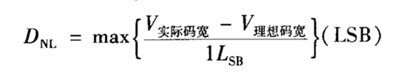
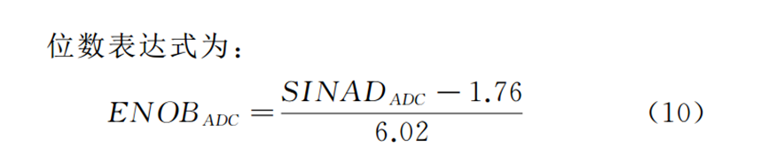

MM32 ADC 介绍¶
ADC 动态特性¶
动态特性有时也称作传输参数，代表器件模拟信号采样和输入波形的数字再现能力。
总谐波失真¶
总谐波失真 THD （Total Harmonic Distortion）是指输入信号与所有谐波的总功率比。总谐波失真用以表达其对信号谐波含量的作用或者影响，提供了系统对称和非对称非线性产生 的总失真大小。
信噪比¶
信噪比 SNR （Signal-to Noise Ratio）指的是输入信号和噪声（不包括任何谐波和直流）的功率比，是一种用于定义器件内部噪声大小的基本参数。理想情况下的表达式为
SNR=6.02N+1.76dB （N表示比特位数）
杂散动态范围¶
无杂散动态范围（Spurious-free Dynamic Range ,SFDR）是指基本频率与杂波信号最大值之比，负责表征量化整个系统的失真的指标。由于杂波通常表示器件输入与输出的非线性，因此产生于各个谐波中。
信纳比¶
信纳比(Signal to Noise And Distortion, SINAD )是输入信号和所有输出信号失真功率比，（包括谐波成分，不包括直流），它测量的是输出信号所有传递函数非线性加上系统所有噪声 的累计效果。
有效位数¶
有效位数（Effective Number of Bits，ENOB）是在 ADC 器件信噪比基础上计算出来的，它将传输信号质量转换为等效比特分辨率。实际上系统噪声使输出信号失真，失真大小就反映在信噪比上。
ADC 静态特性¶
静态参数描述的是器件的内在特性，和器件内部电路的误差相关。
静态参数反映ADC的静态误差，即转换器量化直流信号时影响精度的误差。
微分非线性¶
微分非线性（Differential Non-Linearity，DNL） 理想ADC每个码宽都应该相同，但实际上，相邻两刻度之间的间距不可能都是相等的，ADC相邻两颗度之间最大的差异就叫微分非线性。

积分非线性¶
积分非线性（Integral Non-Linearity, INL ） 积分非线性表示 ADC 器件在所有的数字输出码上对应的理想模拟值和真实模拟值之间误差最大的那个误差值，也就是输出数值偏离线性最大的距离。
通常我们比较关注的是微分非线性和积分非线性中的最大值。通常将其与 LSB 比较来判断 ADC 是否达到所需要的精度。
丢码¶
丢码（Mis Code）是当 ADC 的模拟输入满量程变化时，其输出的数字码存在一个或者多个码缺失的现象。

增益误差¶
增益误差（Gain Error）也称为满刻度误差（Gain Error，缩写为Eg）。定义为 ADC 输出满刻度输出码时实际输入电压与理想输入电压之差。
偏置误差¶
偏置误差（Offset Error）通常用最低有效位、伏特或者是最大量程的百分数（%FSR）来表示。
量化误差¶
第一种 ADC 假设满量程 FS=8V， 这里 1LSB=8V/8=1V ,例如输入 2.999 输出为 2，这里的量化误差为 1LSB。
第二种 ADC 假设满量程 FS=8V， 这里 1LSB=8V/8=1V ,例如输入 2.499 或者 1.5 输出为 2，量化误差为 +- ½ LSB。
ADC 参数理论计算方法¶
FFT测试法是利用数字信号处理技术对ADC采样后的数据进行FFT变换，通过将满量程正弦信号作为待测ADC的输入信号，经过ADC采样后传输到PC 机，利用计算机数字信号技术处理对采样信号进行FFT变换，从而计算出ADC的频域参数。FFT测试方法主要依靠数字信号处理和傅里叶变换技术，将时域信号采样数据的分析转化到频域谱线能量上来进行分析。

ADC 功能描述¶
- 转换速率
- 1Msps 转换速率
- 3Msps 转换速率
- 支持普通通道转换
- 单次转换模式：在指定通道完成一次转换；
- 单周期扫描模式：对所有指定通道（从低序号通道到高序号通道，或从高序号通道到低序号通道）完成一个周期转换；
- 连续扫描模式：连续执行单周期扫描模式直到软件停止 A/D 转换。若需要修改转换通道只能停止A/D 转换，等待完成寄存器配置再重新开启转换。
- 支持任意通道转换
- 单次转换模式：在指定通道完成一次转换；
- 单周期扫描模式：在所有指定通道按照通道设置完成一个周期转换；
- 连续扫描模式：连续执行单周期扫描模式直到软件停止 A/D 转换。若需要转换期间修改通道，用户不必停止转换，可配置相应通道寄存器，配置的新通道将在下一个扫描周期进行转换。
- 注入通道转换
- 自动注入：在任意通道转换方式下，完成任意通道转换后自动开始进行注入通道转换。
- 事件注入：注入事件到来， A/D 任意转换立即停止，并开始注入通道转换，完成注入通道转换后继续执行任意通道转换；
- 可编程通道采样时间
- 最高 12 位可编程分辨率 SAR
- 支持 DMA 传输
- A/D 转换开始条件
- 软件启动
- 触发启动，可配置触发延时。触发源包括： Timer 和 EXTI
- 模拟看门狗功能。转换结果与指定的阈值区间进行比较，当转换值超出设定的阈值区间时，如果 ADC_ADCR.AWDIE 置位，则产生中断。
- 支持自校准功能，输入时钟 1.5MHz
- 支持单端、差分、伪差分转换
- 支持过采样
时钟与采样速率¶
通常用采样速率来区分 ADC 的版本，有 1Msps 和 3Msps 两种 ADC。
ADC 时钟源为 APB2。
ADC 转换通道的采样时间可通过 ADC_SMPR1、 ADC_SMPR2 和 ADC_SMPR3 寄存器中的SAMPCTL0~SAMPCTL18 配置。 ADC 采样周期数目 m 可以通过配置 ADC_SMPR1、 ADC_SMPR2 和 ADC_SMPR3 寄存器来更改。设置 ADC 分辨率为 n 位（n=8， 9， 10， 11， 12），每个通道采样周期为 m*T(T 为 ADC 模块的时钟周期)。
转换频率计算如下： Fsample = FADC_CLK /(m+n+0.5)。
假设分辨率 n 配置为 12bit，每个通道采样周期 m 为 3.5T，则 Fsample = FADC_CLK/16。
数据补偿¶
非注入通道数据没有数据补偿。
注入通道转换数据减去 ADC_JOFRn 寄存器定义的偏移量后保存到注入通道数据寄存器 ADC_JADDATA 和 ADC_JDRn。补偿后的结果可能为负值，因此注入通道转换的结果是有符号数据（数据对齐 SEXT 位是扩展的符号值）。
如果配置 ADC_JOFRn.JOFFSET 不为 0，则注入通道数据寄存器 ADC_JADDATA 和 ADC_JDRn 数据为有符号值，否则为无符号值。
数据对齐¶
通道选择¶
ADC1 和 ADC3 有 19 路外部输入通道 0~18， ADC2 有 17 路外部输入通道 0~16、内部温度传感器通道 17、内部 1.0V 参考电压通道 18。
不同工作方式下可以通过不同寄存器来使能通道：
- 普通通道转换可设置寄存器 ADC_ADCHS， 注意普通模式只可以设置通 道 0~15 ；
- 任意通道转换可设置寄存器 ADC_ANY_CFG、 ADC_CHANY0、 ADC_CHANY1，任意通道转换顺序从寄存器位 CHANY_SEL0~18 优先级由高到低依次转换；
- 注入通道转换可设置寄存器 JSQR，注入通道转换顺序从寄存器位 JSQ0~3 优先级由高到低依次转换。
通道转换¶
普通通道转换¶
- 单次采样
- 单周期扫描模式
- 连续扫描模式
任意通道转换¶
- 单次采样
- 单周期扫描模式
- 连续扫描模式
注入通道转换¶
- 自动注入通道转换